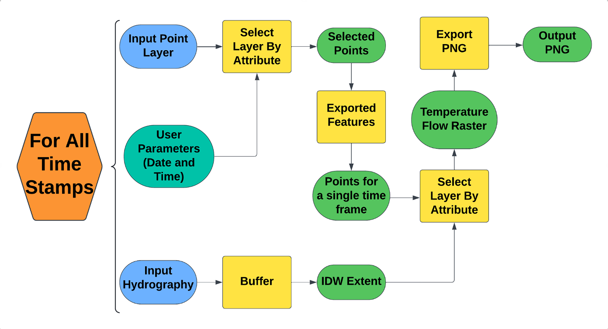
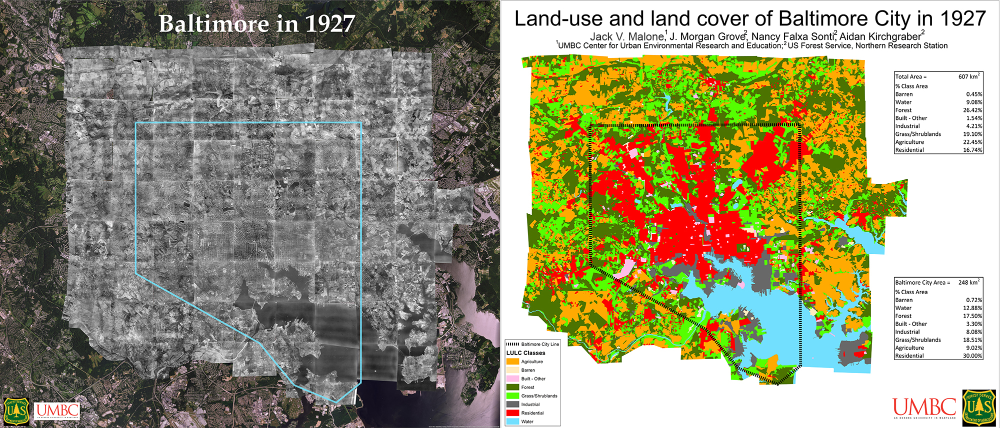

GIS and data management professional | Greensboro, NC
Problem: A three-year database of stream temperatures recorded every five minutes at 200 field sites could only be turned into an animation by building hundreds of maps, which would take far too long by hand.
What I did: I developed a Python/ArcPy workflow, with student assistance, that connects to the SQLite database, maps temperatures at all 200 sites for a single point in time, and repeats the process at five-minute increments for any date range. The maps were then assembled in video editing software into an animation.
Result: The workflow automates the creation of the hundreds of maps the animation requires. It was published in Hydrological Processes (2025), and the data and code are on HydroShare.
Example animation of a summer storm in the Dead Run watershed in Baltimore, MD: a sudden rise in stream temperature caused by stormwater runoff. The animation begins with relative temperature stability, then shows a flash temperature increase from the storm and subsequent return to temperature stability. This animation represents 19 hours using 228 maps, with each map representing one 5-minute increment. Click to play.

Workflow diagram for the iterative time-step algorithm that runs in ArcPy. Each time-step requires the creation of a map with a temperature value for each of the 200 stream sensors. Time-steps are 5 minute increments.
Paper (Hydrological Processes) | Workflow data and code (HydroShare)
Problem: Aerial photographs of Baltimore from 1927 and 1953 needed to be georectified and classified before they could be used in urban landscape studies.
What I did: I supervised and trained students, including NSF Research Experience for Undergraduates and U.S. Forest Service project participants, to georectify, digitize, and classify the imagery into land-use/land-cover datasets.
Result: The georectified mosaics and the land-use/land-cover classifications for both years are published and publicly available through the Environmental Data Initiative.

Georectification of 93 historical aerial images of 1927 Baltimore beside its land-use and land cover classification. Click to enlarge.
IALE-North America Conference presentation on the project (10 minutes). Click to play.
1927: georectified mosaic,
land-use/land-cover
1953: georectified mosaic,
land-use/land-cover